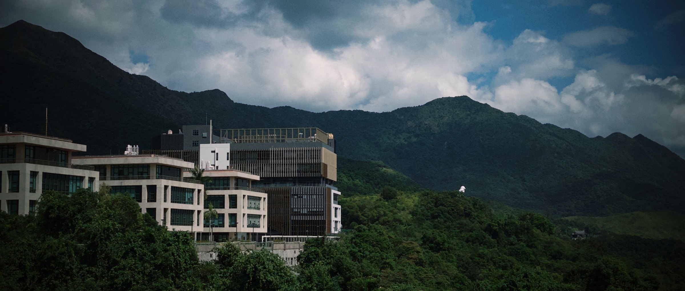

An Ordinary Day
Fourteen moments of a student's day, seen through fourteen eye conditions
An ordinary day is full of small visual tasks we never notice: crossing a road, reading a price tag, recognising a friend, finding the right room. Not everyone sees them the same way.
Each photograph shows a moment of the day the way one eye condition might see it. Move the magnifier over it to reveal the original.
Start the dayOne day, fourteen ways of seeing
From the alarm to dinner, each photograph is seen through one eye condition. Move the magnifier over a photo to reveal the original.
ScrollFourteen ways of seeing
The eye conditions, grouped by what they change. Choose one to open its photograph.
How the photographs were made
A photo essay about how one ordinary day can look to people who see differently.
Project
- Title
- An Ordinary Day
- Year
- 2026
- Course
- ART3185 Digital Imaging and Interactive Media
- By
- Kamila Kargabaeva
- SID
- 11534331
Contact
Notes
- All photographs were taken by Kamila Kargabaeva in Hong Kong in 2026.
- The edited versions are illustrations, not medical reproductions. People with the same condition see differently.
- The edit recipes and the website code were developed with help from Claude (Anthropic). The effects use standard Photoshop tools; no generative fill or AI image generation was used.
How each condition was researched and edited
Each edit starts from a medical description of what the condition changes, then recreates that change in Photoshop. The edits are illustrations, not exact reproductions.
| # | Condition | What the research describes | How it was edited | Source |
|---|